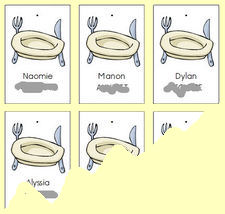

Le tampon dateur
Mettre la date avec un tampon est le signe que son travail est terminé et a été vérifié par
l'adulte. Soit c'est l'adulte qui met la date, soit c'est l'enfant après accord de l'adulte.
Pour éviter les dates à l'envers, on a collé une gommette sur le tampon et dessiné un visage...
Le bonhomme doit nous regarder quand il met la date... et bien sûr il sourit !!!
Ensuite on range son travail dans le chariot (resserre à légumes), dans le panier correspondant à la
couleur de son groupe.
Pointage des ateliers
Pour s'y retrouver parmi ceux qui ont fait ou pas leur travail, on prépare des listes de prénoms, un
peu à la manière des petites annonces avec numéros de téléphone à déchirer qu'on voit dans les
commerces.
Le nom de l'atelier ou de l'activité est écrit le moment venu en haut de la liste. Elle peut être
affichée, grâce à une simple pince à papier, dans l'espace d'activité concerné
L'enfant qui a choisi l'atelier, déchire l'étiquette de son prénom et la colle sur son travail,
peinture, etc... Si l'enfant est trop jeune pour le faire, l'adulte s'en charge. On voit ainsi tout
de suite ceux qui n'ont pas encore fait l'activité, ou qui sont absents.
On peut aussi utiliser ce système pour faire les groupes auxquels on propose du travail différencié.

Etiquettes de cantine
Dans le couloir, à la porte de la classe, un panneau avec les étiquettes des enfants, si l'enfant
déjeune à l'école, le parent prend l'étiquette et la dépose dans un panier sur la table à proximité
de la porte, ensuite, l'atsem pointe les cartes.
Pour se simplifier la tâche, on peut faire appel à la fonction "fusion / publipostage" d'un logiciel
comme Microsoft Publisher par exemple, : on imprime alors directement les étiquettes avec le nom et
le prénom.
Périscolaire
Un panneau à double-entrée simple feuille A3 changée tous les lundis, est affiché dans le couloir.
Les parents font une croix dans la case si l'enfant reste à l'accueil périscolaire du soir.

Roue des responsables
Chaque jour, on fait tourner la roue lors des rituels pour désigner la couleur du groupe des
«responsables». Ce sont eux qui seront chargés de vérifier que les coins jeux sont bien rangés, de
compter les présents et les absents, de distribuer et ranger le matériel dans la classe ou dans la
salle de jeux, d’être en tête et en fin de rang, de modifier (le cas échéant) la roue de la météo en
cours de journée, etc… Ce n’est donc pas UN enfant qui est chargé d’UNE tâche, mais UNE équipe qui
doit s’organiser afin de résoudre les petits problèmes matériels du jour (différents d’un jour à
l’autre selon les activités menées.)
Etiquettes de présence
Les étiquettes de présence des enfants (distinctes des étiquettes de cantine) sont dans la classe.
L'enfant prend son étiquette et la place sur un tableau magnétique. Simple plaque de métal percée de
deux trous pour l'accrocher (une dizaine d'euros dans un grand magasin de bricolage). Une feuille de
Canson est patafixée sur la plaque, le support peut ainsi évoluer au cours de l'année ou selon les
besoins : colonnes pour les couleurs des groupes, motifs particuliers, dessins de maisons, etc...
Des aimants de couleur (1) peuvent indiquer la colonne de chaque groupe, par exemple.
Les étiquettes tiennent grâce à des morceaux d'aimants découpés dans du ruban magnétique (2) qu'on
trouve facilement dans les catalogues. On les récupère d'une année sur l'autre, et quand ils ne
collent plus trop, on les scotche tout simplement au dos des étiquettes.
Lors des rituels, on compte les enfants présents, et on place le bon chiffre dans la colonne
correspondante. Les étiquettes des absents sont placées en bas de chaque colonne.
Groupes de couleur
Les couleurs, si on opte pour des groupes fixes, cela pour être le cas pour certaines activités, est
un système très simple : un objet de couleur (cube, plot) pour désigner la table ou le lieu où doit
se rendre tel groupe, pratique en motricité quand il faut faire tourner plusieurs groupes dans
plusieurs ateliers, chouchou de couleur (ça se trouve facilement) au poignet pour faire des équipes,
et éventuellement, en début d'année : petit point de couleur sur le pouce pour repérer son groupe.
Accrochage
C'est devenu un grand classique : tendre un fil ou plusieurs à travers la classe afin d'y accrocher
des mobiles, des dessins... il est possible d'utiliser des pitons ronds comme poulies, une extrémité
du fil est fixe, et l'autre descend le long d'un mur. Un des pitons peut se trouver au milieu de la
classe, on peut alors y accrocher un porte "pinces à linge", un cintre, etc... Un exemple de
"calendrier de l'avent" fait sur ce dispositif est disponible sur le site (lettre N). L'idéal est
d'utiliser du fil nylon vendu en bobines pour les coupe-bordures électriques.
Un outil très simple à fabriquer avec un manche à balai, et un piton. En se servant de trombones en
partie dépliés comme crochets, on accroche (et décroche) ce que l'on souhaite au plafond, sans avoir
à grimper sur un escabeau
Cahier de liaison
Pas de cahier de liaison qui circule entre l'école et la famille. Seulement des feuilles volantes
avec, éventuellement, un coupon réponse à retourner à l'école. Le cahier contient des informations
destinées aux parents mais à moins que les parents ne recopient l'info, ils ne l'ont pas à leur
disposition (ex : c'est quand déjà le pique-nique ? qu'est-ce qu'on doit apporter pour jeudi ?... )
c'est bien sûr marqué dans le cahier, mais il est à l'école...
Quelle perte de temps de coller les documents dans le cahier, quel gaspillage de papier, sans parler
du temps passé à éplucher tous les cahiers quand ils arrivent le matin pour savoir si un parent nous
a fait passer une information importante. La solution retenue a été la pose d'une petite étagère en
bois au-dessus des porte-manteaux, elle supporte une planche de plexiglas inclinée, il est alors
très facile d'y déposer les documents à transmettre aux familles : chacun enfant a ainsi sa "boîte à
lettres". Il est vrai qu'une feuille peut se perdre, mais guère plus en fait qu'un cahier.

Organisation des coins jeux
Pour limiter l’accès à certains coins jeux, les enfants utilisent des colliers en libre service. On
peut les confectionner en glissant des images dans des petites pochettes en plastique (environ 6 x 9
cm) que l’on trouve dans les magasins qui fournissent les boutiques. (Equip’décor, Rétif, etc…)
Découper et plier sur les pointillés avant de glisser dans la pochette. Il est conseillé de placer
un morceau de carton au milieu pour consolider. Glisser un lacet dans le trou déjà existant pour que
l’enfant puisse mettre le collier autour de son cou (éviter les liens coupants ou la laine).
Si on veut éviter le système du collier, on peut le remplacer par une pince à linge accrochée au
vêtement de l'enfant. On peut indiquer, par un chiffre, des gommettes, un dessin de bonhomme... le
nombre de places disponibles pour l'activité.
Autre solution : chaque enfant dispose d'une pince à linge marquée de son prénom (et éventuellement
de la couleur de son groupe) qu'il accroche sur le côté de l'affichette.
Plus d'infos à la lettre S comme
Signalétiques.

Gobelets
Chaque enfant fournit un gobelet en début d'année (il lui est rendu à la fin de l'année). Les
gobelets sont dans la classe, à la libre disposition des enfants. Ils sont entreposés, par groupes
de couleur, dans une resserre à légumes en plastique. Il est ainsi facile de les transporter où on
le souhaite (salle d'eau, à l'extérieur,....). Nous avons ajouté un bac en plastique au fond de
chaque panier afin de récupérer l'eau
Les enfants se servent seuls, le cas échéant par groupe pour éviter les embouteillages aux robinets
de la classe.
Pour l'extérieur, ou les sorties, nous avons investi dans un jerrycan souple, pliable, ne prend pas
de place, très léger à transporter, et comme en général il y a un point d'eau là où l'on va... les
enfants se servent comme à un robinet... d'ailleurs, il y a un robinet ! Très abordables au rayon
camping des supermarchés.
Ronds à dessins
Les enfants disposent de casiers pour ranger leurs dessins, quand ça "déborde", distribution de
"ronds de serviette" (rouleaux de papier toilette découpés aux ciseaux en "tranches"), les enfants
roulent leurs dessins et les glissent dans l'anneau de carton. Pratique également pour emporter,
sans les abimer, les peintures à la maison. Les plus grands écriront leur prénom sur le rouleau.
Tableau blanc
Pour effacer les traces de crayon sur les ardoises ou les tableaux blancs, et les remettre à neuf,
rien de tel que le produit liquide pour enlever les traces d'adhésif sur la peau.
Vendu aux alentours de 4 € en pharmacie.
A utiliser par l'adulte, hors de la présence des enfants.
Armoire de rangement
Fixer une feuille derrière une des portes pour y inscrire rapidement, le matériel qu'il faudra
penser à recommander. Très pratique quand l'heure des commandes arrive !
Des bouteilles de plastique coupées à mi hauteur font d'excellents rangements dont le contenu est
directement visible.